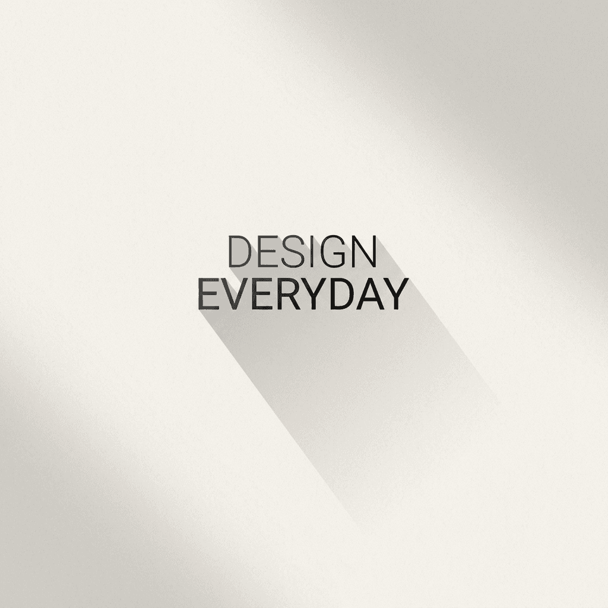

Digitális design · Felhasználói élmény
UX/UI tervezés

Design, amely az első kattintástól az utolsó lépésig működik. A vizuális ritmust, a világos hierarchiát és az emberközpontú gondolkodást ötvözöm, hogy a felületek természetesek és megkülönböztethetők legyenek.
← Vissza a főoldalra